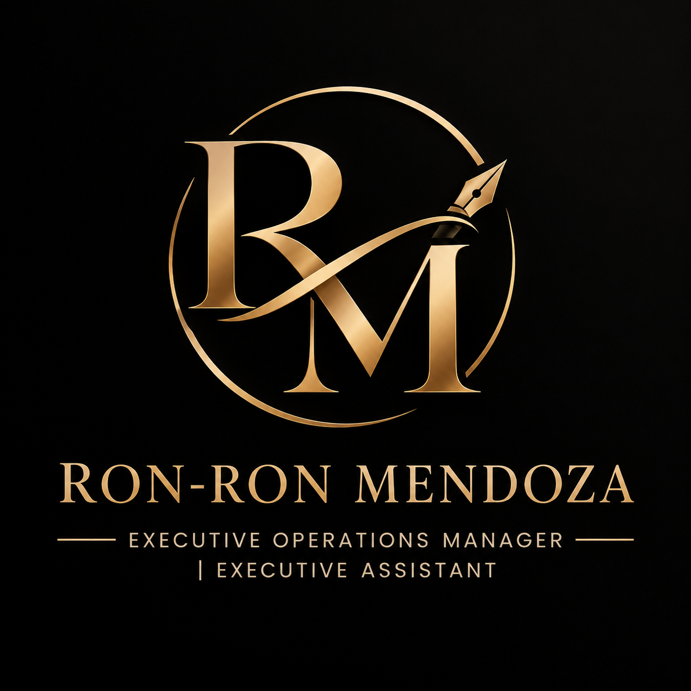

Executive Support
Inbox review, calendar commitments, client communication, lead generation, CRM updates and concise daily reporting.
- Inbox & priorities
- Calendar & commitments
- Daily reporting

RON-RON MENDOZAEXECUTIVE OPERATIONS Let's Talk ↗Executive and virtual support across calendars, meetings, correspondence, client communication, CRM administration, lead generation, reporting and day-to-day operations.

HOW I WORK
I support executives by keeping calendars, meetings, correspondence, client communication, records and follow-ups organized and moving forward.
My experience combines executive assistance, virtual assistance, CRM administration, client support, lead generation, research, reporting and digital content work.
ONE SEAT · MULTIPLE OPERATING LANES
My experience spans executive support, client communication, outbound calling, CRM updates, appointment scheduling, research, reporting and digital content.
Inbox review, calendar commitments, client communication, lead generation, CRM updates and concise daily reporting.
Every contact has a current status and a next action, with calls, messages, voicemails, replies and CRM updates forming one operating record.
Clear, contextual and professional communication across email, chat, client requests, vendors and executive follow-ups.
Executive travel and calendar commitments coordinated with local time, reminders and documentation.
Gather the facts needed for a decision, verify important details, distinguish confirmed information from assumptions, and present concise findings.
Keep records current and translate activity into a concise end-of-day picture: completed, pending, blocked and next.
PRACTICAL SYSTEMS · POLISHED RESULTS
Portfolio samples built around executive calendar management, travel booking, operational reporting and follow-through.
A structured calendar sample covering flights, hotel check-in, meetings, transfers, train travel, reminders, time zones and booking documentation.
Options are organized around route, timing, flexibility, proximity and clear diary standards.
Completed, pending, blocked and next — presented so the executive does not need to reconstruct the day.
View full portfolio ↗Every contact has a current status, last touch, next action, next date, notes and owner — so activity does not masquerade as progress.
CONTENT SAMPLES · VIDEO WORK
Selected video and social-media content samples from my digital and marketing work.
Short-form educational reel focused on travel insurance misconceptions.
Travel-focused social content sample.
Concise vertical video sample for social media.
Informational financial-services social video sample.
Short-form content sample.
Short-form content sample.
Short-form content sample.
RESUME
View the resume for my complete employment history, competencies, education and training.
END-OF-DAY VISIBILITY
A useful report answers five questions: what was completed, what is still open, what is waiting on someone else, what needs executive attention, and what tomorrow’s first move should be.
Record the work that actually moved, not just activity that occurred.
Keep open items visible with ownership and a clear next action.
Surface blockers early instead of allowing tasks to silently age.
Leave the executive with a clean picture of what happens next.
My job is to turn requests into organized actions, decisions into follow-through, and activity into a clean record.— RON-RON MENDOZA · OPERATING PRINCIPLE
CAREER SNAPSHOT
Experience across executive assistance, virtual assistance, customer service, CRM administration, lead generation, research, social media, digital advertising and content editing.
View Resume ↗Supported six UK-based Managing Directors with high-level administrative and operational support across multiple time zones. Managed complex calendars, meetings, agendas and follow-ups, executive correspondence, travel coordination, reports and presentations, project deadlines, stakeholder communication, filing systems and databases.
Provided virtual and executive support while managing social media, client communications, CRM systems, insurance sales and digital content. Managed the CEO's calendar and appointments, handled social-media inquiries and outbound calls, followed up with prospects, managed Apizeal and other insurance CRM platforms, assisted with team training, and created social-media advertisements and promotional videos.
Handled emails and phone calls from doctors and patients, scheduled appointments, conducted cold calls from provided spreadsheets, researched contact details, and prepared presentations according to instructions.
Resolved customer queries, recommended solutions and guided product users through features and functionalities.
Resolved customer queries, recommended solutions and guided product users through features and functionalities.
Managed incoming calls and customer-service inquiries, generated sales leads, and identified and assessed customer needs to support customer satisfaction.
Provided customers with banking product and service information through clear and service-focused communication.
Presented records, linked programming segments and entertained listeners as a part-time radio personality.
Promoted bathroom accessories and equipment, while also handling installation and repair of water heaters and related equipment.
TRUST IS THE REAL DELIVERABLE
Sensitive executive, client, financial and operational information handled on a need-to-know basis.
If a fact is unknown, I flag it rather than manufacture certainty.
Reduce avoidable back-and-forth and prepare information before it is requested.
Keep work understandable even when the day becomes chaotic or priorities change.
EXECUTIVE SUPPORT
OPERATIONS & CLIENTS
DIGITAL & PROFESSIONAL
THE OPERATING STANDARD
The objective is not more activity. It is clearer movement, cleaner records and fewer open loops.
Identify the real outcome and surface missing facts before execution.
Give every task an owner, a next step and, when useful, a date.
Carry the relevant context with each message and route the right next action.
Track replies, blockers and unresolved items until the loop is closed.
READY TO WORK TOGETHER?
Tell me what needs to move. I'll help turn it into an organized, visible and reliable workflow.